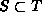
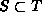

Data Structures and Algorithms
with Object-Oriented Design Patterns in Java
Data Structures and Algorithms
with Object-Oriented Design Patterns in Java
There is a special family of operators for comparing sets.
Consider two sets, say S and T.
We say that S is a subset of T,
written  ,
if every element of S is also an element of T.
If there is at least one element of T that is not also an element of S,
we say that S is a
proper subset of T,
written .
We can also reverse the order in which the expressions are written
to get or ,
which indicates that T is a
(proper) superset
of S.
,
if every element of S is also an element of T.
If there is at least one element of T that is not also an element of S,
we say that S is a
proper subset of T,
written .
We can also reverse the order in which the expressions are written
to get or ,
which indicates that T is a
(proper) superset
of S.
The set comparison operators follow the rule that if  and
and  then ,
which is analogous to a similar property of numbers:
.
However, set comparison is unlike numeric comparison in that there
exist sets S and T for which neither
then ,
which is analogous to a similar property of numbers:
.
However, set comparison is unlike numeric comparison in that there
exist sets S and T for which neither  nor
nor  !
For example, clearly this is the case for and .
Mathematically, the relation is called
a partial order
because there exist some pairs of sets for which neither
!
For example, clearly this is the case for and .
Mathematically, the relation is called
a partial order
because there exist some pairs of sets for which neither  nor
nor  holds;
whereas the relation (among integers, say) is a total order.
holds;
whereas the relation (among integers, say) is a total order.
Program  defines the methods isEQ and isSubset
each of which take argument that is assumed to be a SetAsArray instance.
The former tests for equality
and the latter determines whether the relation holds
between this and set.
Both operators return a boolean result.
The worst-case running time of each of these operations is clearly O(N).
defines the methods isEQ and isSubset
each of which take argument that is assumed to be a SetAsArray instance.
The former tests for equality
and the latter determines whether the relation holds
between this and set.
Both operators return a boolean result.
The worst-case running time of each of these operations is clearly O(N).
Program: SetAsArray class isEQ and isSubset methods.
A complete repertoire of comparison methods would also include
methods to compute ,  , , and .
These operations follow directly from the implementation
shown in Program (Exercise ).
, , and .
These operations follow directly from the implementation
shown in Program (Exercise ).
 Copyright © 1998 by Bruno R. Preiss, P.Eng. All rights reserved.
Copyright © 1998 by Bruno R. Preiss, P.Eng. All rights reserved.